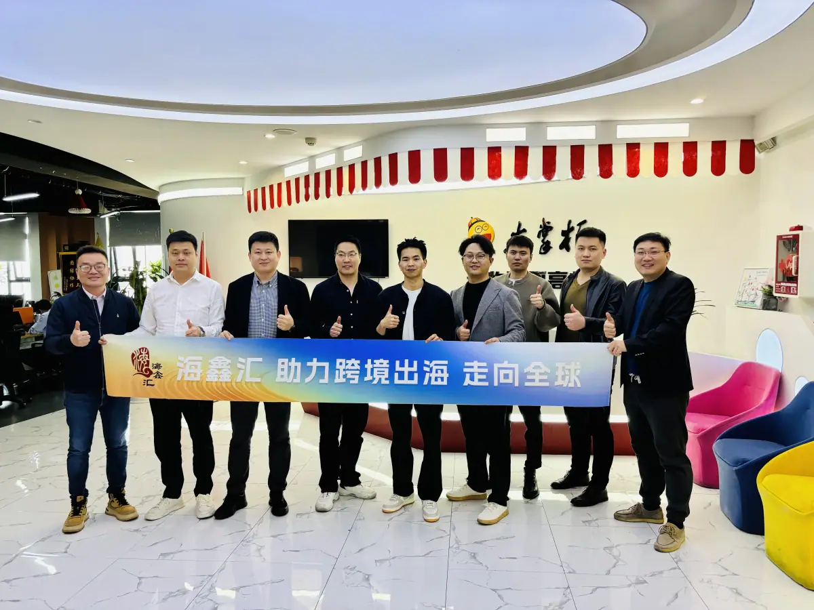

SALON-13
出海沙龙 · OUTBOUND SALON
宁波·制造企业出海：从代工到自建海外渠道的实战路径
Ningbo Salon: from OEM to self-built overseas channels — a practical path for manufacturers going global.
出海沙龙 共赴山海，洞见世界。2025，出海破局是大势所趋——不出海，便出局。

共赴山海，洞见世界。
2025，出海破局是大势所趋。在这时代浪潮下，每一个心怀壮志的人都深知：不出海，便出局。这不仅是一句警示，更是我们内心的呐喊。宁波的和君友人，此刻，诚邀您携手，共启出海新程。
1 · 和君专属场｜生态筑基
- ▶ 3月25日 09:00-12:00 破局者茶叙
- ▶ 宁波市鄞州区，报名后通知具体地点
核心价值锚点：
- ✅ 标杆技术透视：群核科技，张乐。杭州科技六小龙，酷家乐棚拍技术突破，用数字孪生呈现中国制造之美；
- ✅ 跨境贸易领航：环世物流，张东裕。海运资深专家，曾任职多家国际物流巨头，多年海外仓供应链实战经验与全球物流网络；
- ✅ 跨境贸易先锋：环世物流，姚恩山。国际物流、海外仓，全链路降本增效，整体解决方案；
- ✅ 市场开拓先锋：Coupang，Chris。作为华东大区负责人，解析韩国电商巨头如何撬动万亿蓝海市场新机遇；
- ✅ 跨国能源深耕：舟山伟航，王勇。亚太地区领先的能源工程服务商，专注为全球石油化工、LNG储运及新能源领域提供EPC总承包与全生命周期解决方案；
- ✅ 跨国智控先锋：美国博世，许海啸。Robert Bosch LLC 高级项目经理；主导工业4.0跨国项目集成，智能制造体系下的资源调度与跨洲际技术协同；
- ✅ 实战资源赋能：和君，董立鑫。和君商学五届校友，十八届出海班主任，曾任德国企业高管，多年跨国公司业务实战分享与海外资源；
价值兑现路径：
- ▶ 前沿技术应用场景拆解
- ▶ 跨境电商柔性供应链沙盘推演
- ▶ 即时搭建宁波跨境出海校友联盟，激活本地化资源协同
既是思想盛宴，更是行动起点。期待与各位在三江口共绘出海蓝图，见证中国品牌远征星辰大海。
2 · 行业瞭望台｜生态峰会
【海鑫汇作为协办方，可通过下方长图中二维码报名参加】
四大战略灯塔：
- 🔹 陈航（群核科技CEO）：《2025大家居蓝海战略》顶层设计
- 🔹 十布（影刀RPA创始人）：自动化认知升维驱动效率革命
- 🔹 柴山（家跨联主席）：AI技术重构出海增长动能
- 🔹 亚马逊/SHEIN/Coupang全球高管圆桌：多维破局路径
双重行动坐标：
- 🔹 严玉才（雨果跨境BAH）：定向拆解宁波企业独立站运营痛点
- 🔹 夏峻（百亿级独立站操盘手）：大家居独立站：客户在哪里？
- 🔹 李多全（小数汇智 MicroData）：AI技术革命赋能出海基建
- 🔹 刘艳林（亚马逊云科技）：企业应用伙伴生态与云技术风向
- 🔹 夏欢（亚马逊企业购）：新区域招商运营战略解码
- 🔹 ProBoost.AI：虚拟棚拍与大数据重构跨境全链路
- 🔹 陶学理（后浪正创创始人）：主持圆桌对话，锚定创新共识
（海鑫汇作为杭州科技六小龙——群核科技宁波峰会协办方，精华聚焦供校友参考）
GTN 判断视角
制造企业出海的真正分水岭，是从"代工赚差价"走到"自建海外渠道、掌握品牌与数据"。宁波作为制造重镇，正需要把本地产业带与全球渠道、跨境物流、数字工具连成一张网——这正是海鑫汇协同生态伙伴要帮企业完成的跃迁。
本文内容整理自海鑫汇出海沙龙宁波专场记录。 查看公众号原文 →
想把"出海"从口号变成可执行的路径？先做一次免费首诊判断。
预约免费首诊 →